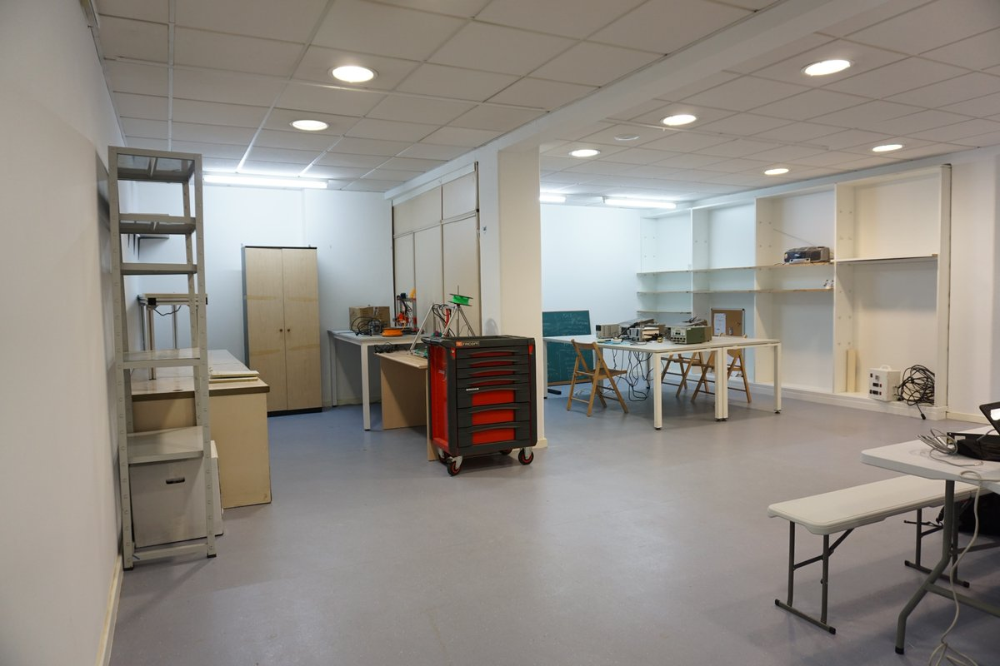

Como ben sabedes levo anos loitando por crear A Industriosa, un obxectivo que eu consideraba primordial para Vigo e que a miña cabeza non parou ata conseguilo. Grazas a un equipazo de xente este proxecto foi adiante pero eu teño que dicir basta, isto converteuse nun traballo, polo que teño que renunciar.
A miña adicación, nos últimos meses, foi en case media xornada de traballo, polo que empuxaba ao 300%, pero este último impulso foi desmesurado e teño que baixar o acelerador, apartarme para que outros fagan as cousas, ademais, a miña incorporación a un novo traballo non me deixa outra opción que perder impulso.
Neste camiño os números son entre alarmantes e impresionantes:
- Mais de 1300 emails escritos relacionados ca Industriosa.
- Mais de 16 meetups + Workshops
- Dúas hackathons organizadas
- Mais de 60 reunións presenciais
- Mais de 400 chamadas (SMS Backup + ftw)
- Conseguidos case 8000€ de patrocinios.
- Aportados mais de 200€ a fondo perdido + 350€ da fianza do local.(Que recuperaremos) + Material que doei a fondo perdido.
Creo que A Industriosa é un proxecto grandioso, e o seu futuro esta fora de toda dúbida, agora toca que en os enxeñeiros de Vigo lle dean contido e que este se aliene aos proxectos das empresas. Por outra parte a autoxestión do espazo, que a comunidade sea capaz de aportar 1000€ mensuais para ter un espazo a disposición de todos e que as empresas so teñan que colaborar para mellorar o espazo ou futuros proxectos é algo primordial.
Que ese espazo sirva como revulsivo para os rapaces da zona inda é mellor! No futuro, moitas veces, igual non lle vemos valor ao espazo, pero a semente moitas veces é o mais importante. Oxala isto sexa como unha plantación de Eucaliptos e se propaguen a toda hostia.
Eu seguirei, xa mais tranquilo, na directiva ata Setembro. A partir de Setembro xa non serei parte da Industriosa e xa solo colaborarei axudando os rapaces. E moi posible que pague a cota a a estudantes e que os intente foguear en proxectos reais que poidan crear valor e axudalos a mellorar, pero iso xa falaremos en Setembro do 2018 ^__^.
Ata Setembro sigo na industriosa, empuxando con todo o marabilloso equipo. Ao mesmo tempo darlle as grazas a Luis Miranda, o home que colleu a Industriosa e deulle o último empuxón ao espazo xunto con todo o equipo para que isto despegara. (O de Luís ten moito mérito)
Unha autentica sorte ser parte deste equipo de xente, graciñas polo viaxe e a desfutrar/empuxar do que me queda.
PS: Agora é o teu momento, da persoa que esta lendo, ti podes colaborar activamente nisto.
PS: Onte dicíame un patrocinador que somos uns heroes, eu son mais de que somos un matados. Unha sociedade que deixa a un dos mellores grupos de enxeñeiros teñan que buscar locais, que teñan que xestionar altas de actividade e facer traballo de xestión é unha sociedade podre. Así é a nosa sociedade, a que se tira o mar para limpa chapapote, a que se tira ao monte a apagar lumes ou a que enche hospitais para doar sangre nunha desgraza, estas imaxes son infames, pero para nós un orgullo! Non debería enorgullecermos, senón avergoñarnos, unha mostra da resignación do pobo galego.
La mitad de los gallegos no sabemos nadar, dijo al fin. Nos ahogamos resignados, y punto. -- Perez Reverte, La reina del sur